Projelerimiz
Sahadan kareler
Teslim ettiğimiz teknelerden, imal ettiğimiz kumanda ve dağıtım panolarından, altyapı işlerimizden ve proje çizimlerimizden 81 fotoğraf.

Fotoğrafa dokunarak büyütün; büyük görünümde kaydırarak gezinebilir, iki parmakla yakınlaştırabilirsiniz.
Teslim Edilen Projeler 18 fotoğraf
Elektrik ve elektronik sistemlerini kurup teslim ettiğimiz teknelerden.


Kumanda Panelleri 23 fotoğraf
Kaptan köşkü konsollarını seyir cihazları ve göstergelerle birlikte, tekneye özel olarak imal ediyoruz.

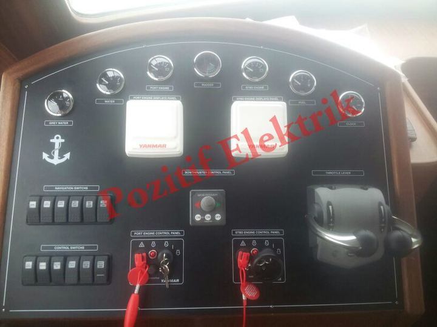

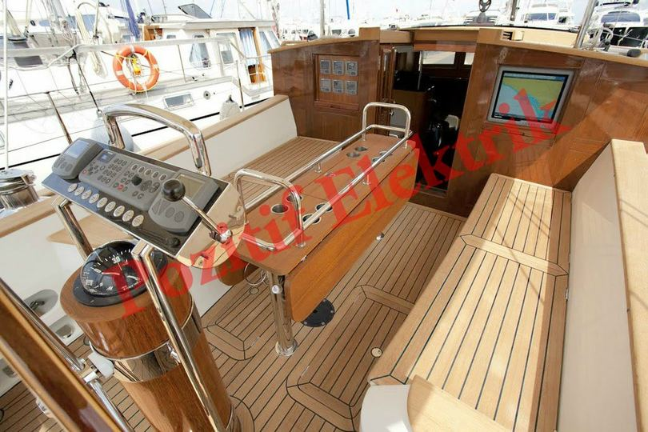

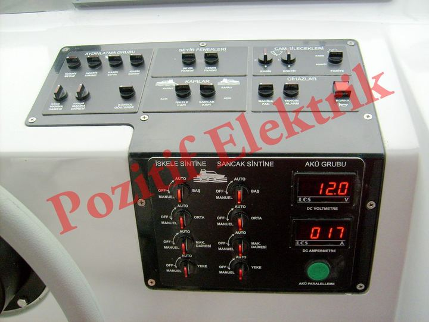

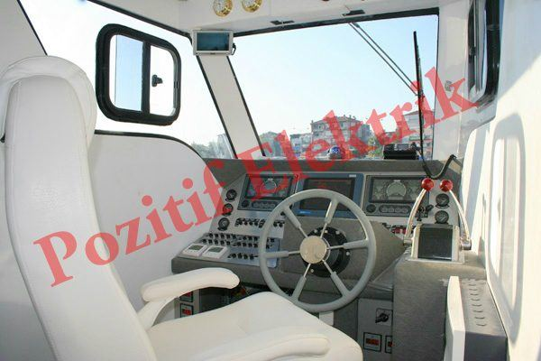

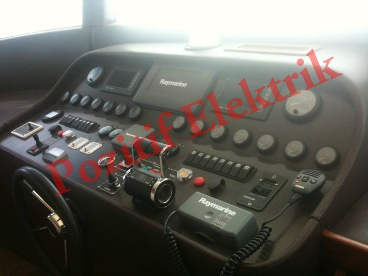

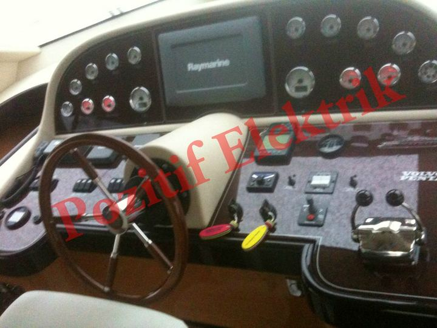

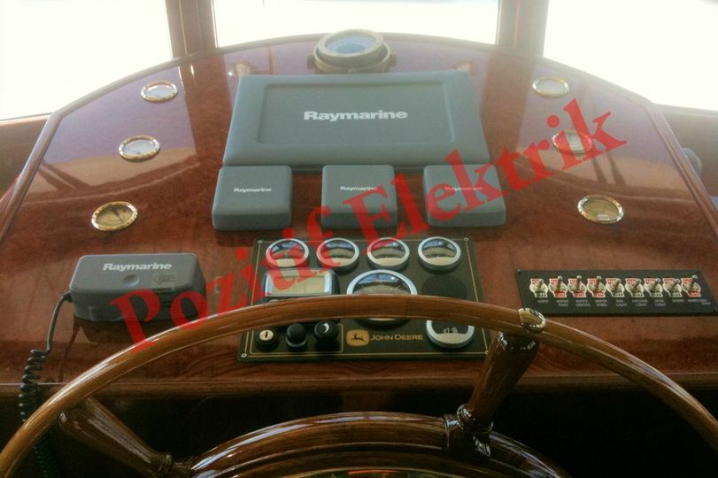

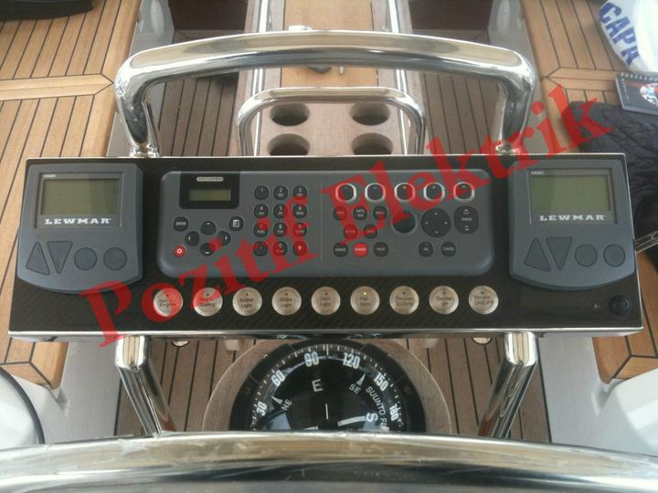

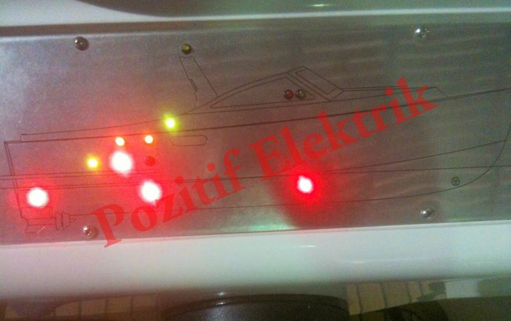

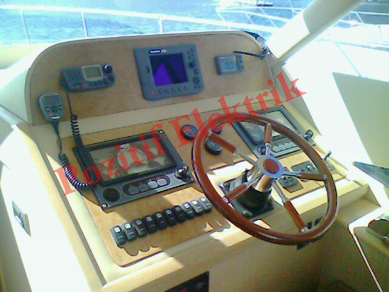

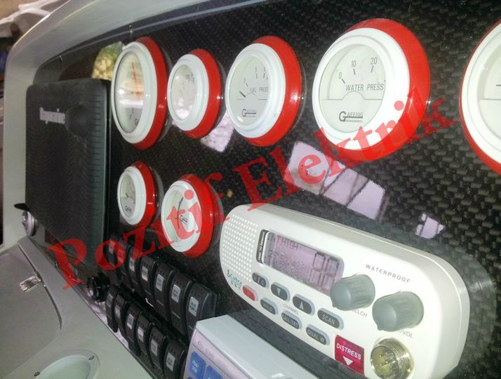

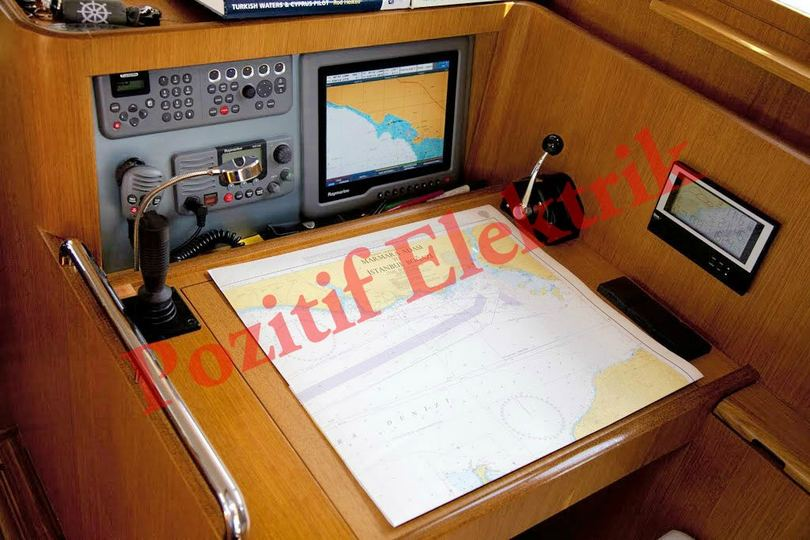

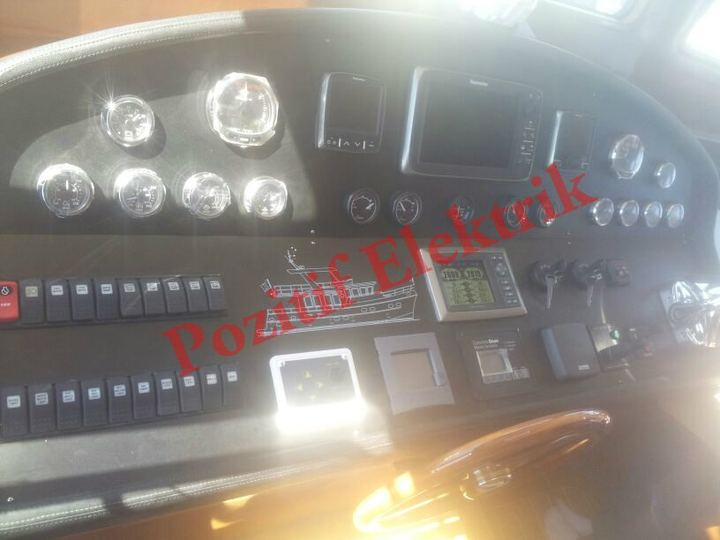

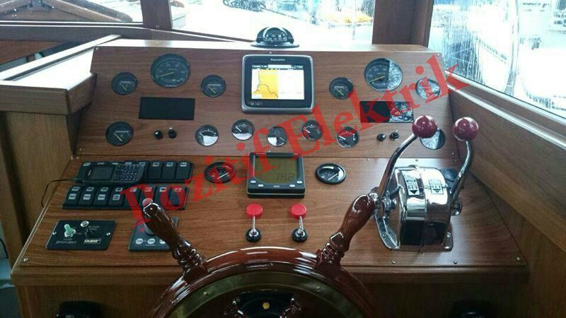

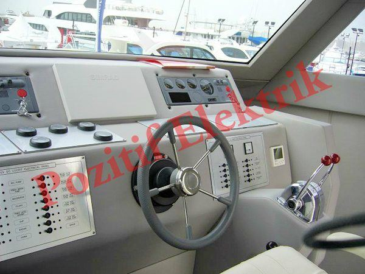

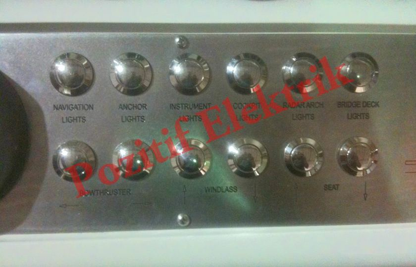

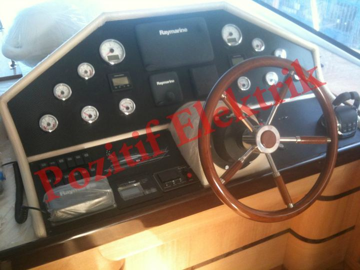

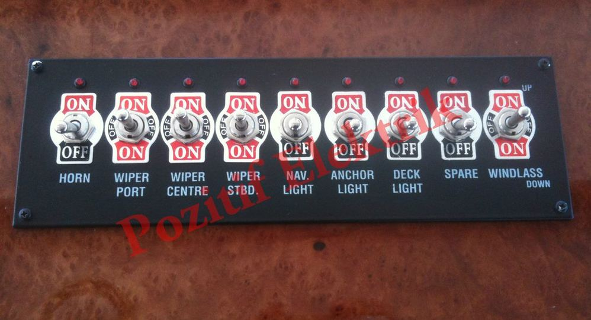

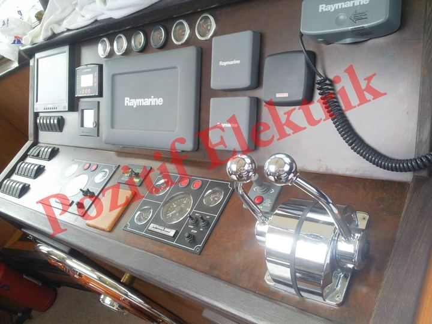

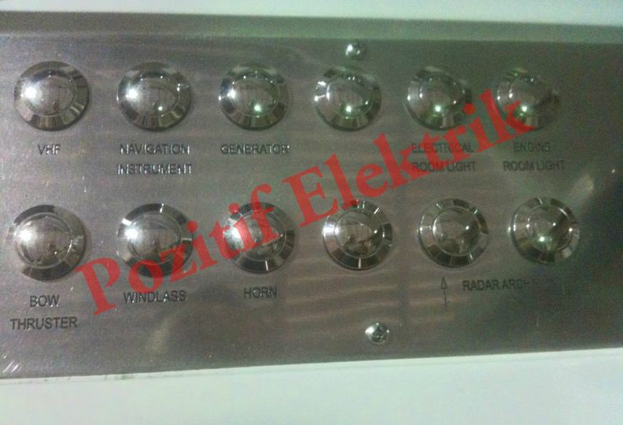

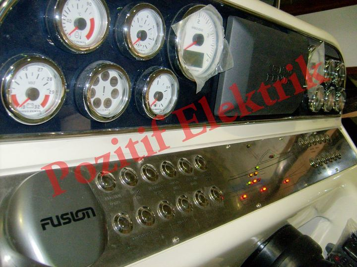

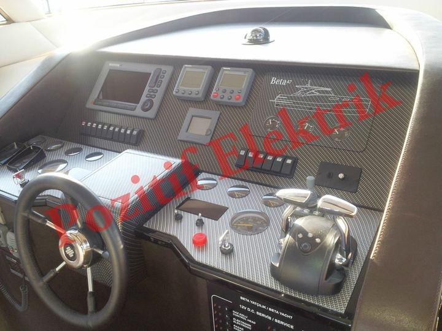

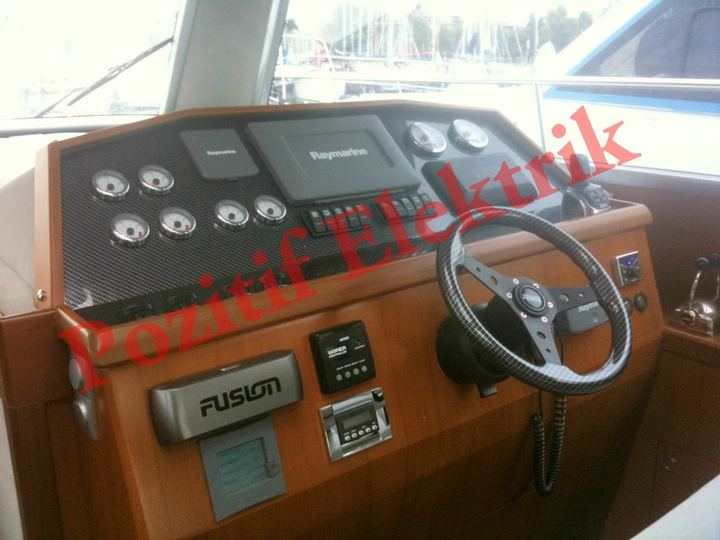
Sigorta ve Alarm Panelleri 18 fotoğraf
Tekne silüeti işlenmiş 12V/24V DC ve 230V AC dağıtım, sigorta ve alarm panolarını tasarlayıp üretiyoruz.


Kablolama ve Altyapı 7 fotoğraf
Kablo kanalları, bağlantı kutuları, akü bağlantıları ve güç dağıtımıyla teknenin elektrik altyapısını kuruyoruz.


Tekne Yazıları 9 fotoğraf
LED arka aydınlatmalı ve paslanmaz harf tekne isim yazılarını tasarlıyor, elektrik sistemine bağlıyoruz.


Proje Çizimleri 6 fotoğraf
Teknenin AC ve DC elektrik şemalarını, yük dağılımını ve pano yerleşimlerini ihtiyaca göre çiziyoruz.


Teknenizin elektrik sistemi için bize ulaşın
Yeni bir proje, bir yenileme ya da bir arıza: ilk görüşmeyi telefonda yapalım.